本文档将介绍如何自定义编辑方法。
适用人群：会编写Dynamic Link Library(即.dll)文件的人员。
1、配置清单文件
①打开软件根目录/Operation/DetailedList.xml(用编辑文本文件的软件打开即可，如记事本)。
<?xml version="1.0" encoding="utf-8"?>
<Operations>
<Operation name="ChangeThePosition" entext="Change the position" zhtext="改变位置" view="ChangeThePosition" dll="sample"/>
</Operations>
其中Operations下的子节点是我们需要操作的节点。
②首先复制一份，
<Operations>
<Operation name="ChangeThePosition" entext="Change the position" zhtext="改变位置" view="ChangeThePosition" dll="sample"/>
<Operation name="ChangeThePosition" entext="Change the position" zhtext="改变位置" view="ChangeThePosition" dll="sample"/>
</Operations>
③然后对复制的内容进行修改：
name：操作名称，保证其唯一性，且与之后的dll文件命名空间后半部分相同(后文有详细介绍)。
entext：语言为英文时显示的文本。
zhtext：语言为中文时显示的文本。
view：视图xml文件路径，不需要额外参数是可为空即(view=””)。
dll：dll文件路径。
<Operations>
<Operation name="ChangeThePosition" entext="Change the position" zhtext="改变位置" view="ChangeThePosition" dll="sample"/>
<Operation name="Test" entext="EnglishTest" zhtext="中文测试" view="Test" dll="Test"/>
</Operations>
④此时，保存DetailedList.xml文件(保存的编码为UTF-8)，重新打开Maker.exe，编辑-第三方下如下图：
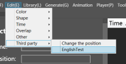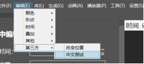
2、配置视图文件
如果你不需要得到额外的参数，那么可以跳过此步骤(如水平翻转)。
①打开软件根目录/Operation/View文件夹，在同目录下复制一份ChangeThePosition.xml
并改名为Test.xml(因为清单文件下view=”Test”)。
<?xml version="1.0" encoding="utf-8"?>
<Views>
<View type="textblock" entext="Before number:" zhtext="改变前数字："/>
<View type="textbox"/>
<View type="textblock" entext="After number:" zhtext="改变后数字："/>
<View type="textbox"/>
</Views>
②根据你的需求(即想要获取什么额外参数来配置该文件)。
type：控件类型，可选：textblock用于显示少量文本内容，可用来展示提示。
textbox用于获取文本内容，可用来获取额外参数。
当type为textblock时，有以下两种属性：
entext：语言为英文时显示的文本。
zhtext：语言为中文时显示的文本。
那么，接下来就可以自行配置了。
<Views>
<View type="textblock" entext="Parameter1:" zhtext="参数1："/>
<View type="textbox"/>
<View type="textblock" entext="Parameter2:" zhtext="参数2："/>
<View type="textbox"/>
</Views>
③此时，保存Test.xml文件(保存的编码为UTF-8)，重新打开Maker.exe，点击-编辑-第三方下-EnglishTest(英文状态下)/中文测试(中文状态下)如下图：
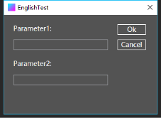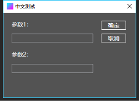
3、编写dll文件
以下以Visual Studio 2017：
①文件-新建-项目-类库
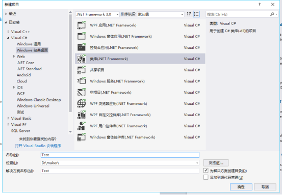
②找到右侧-解决方案资源管理器，修改类名：图中选中的Test可以不用更改，
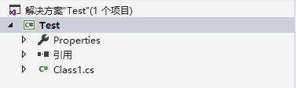
而Class1则是需要修改为清单文件name属性的值即Test。
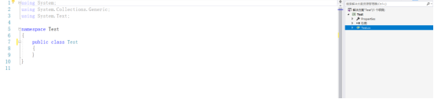
③右键引用-添加引用
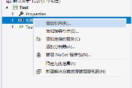
在弹出的对话框中，选择-软件根目录/Operation/Operation.dll文件
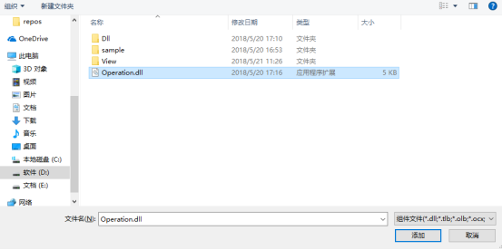
④继承IGetOperationResult并实现IGetOperationResult接口中的方法
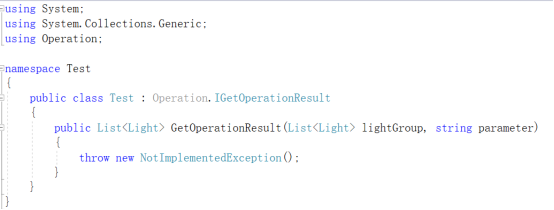
⑤根据需求操作传入的lightGroup灯光数组并返回(此步骤可以参考软件根目录下/Operation/sample.rar，代码也拷贝至文档最后)。
⑥将生成模式改为Release并生成Test.dll。
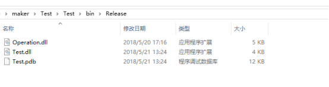
⑦将Test.dll拷贝至软件根目录下/Operation/Dll文件夹下(无需拷贝Operation.dll)
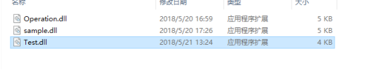
至此编辑方法就已扩展成功。
仍有疑问可进Q群586779832进行询问。
附交换位置的dll代码：
using Operation;
using System;
using System.Collections.Generic;
namespace sample
{
//必须要与清单文件name属性对应,且必须继承IGetOperationResult接口
public class ChangeThePosition : IGetOperationResult
{
//实现IGetOperationResult接口中的方法
public List<Light> GetOperationResult(List<Light> lightGroup, String parameter)
{
//lightGroup - 灯光对象数组
//Light 有四个属性,分别为:Time - 时间,Action - 行为(144开,128关),Position - 位置,Color - 颜色
//Light 有两个构造函数，分别为无参构造 new Light();
// 和四属性构造 new Light(int time,int action,int position,int color);
//parameter - 传入的参数为参数1,参数2,参数N,如无需参数，则传入的参数为空字符串
//根据逗号分割
String[] parameters = parameter.Split(',');
//以下根据自己的意图操作
if (parameters.Length != 2) {
// 判断参数个数是否正确 如果不正确返回空
return null;
}
if (!int.TryParse(parameters[0], out int beforeNumber)) {
//转换失败返回空
return null;
}
if (!int.TryParse(parameters[1], out int afterNumber))
{
//转换失败返回空
return null;
}
//遍历集合
for (int k = 0; k < lightGroup.Count; k++)
{
//如果位置等于前数字
if(lightGroup[k].Position == beforeNumber) {
//那么就改变位置
lightGroup[k].Position = afterNumber;
}
}
//返回结果
return lightGroup;
}
}
}